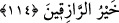
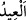

Allah’ın duamıza icabet edeceği konusunda “bize doğru söylediğini” “ilm-i yakîn ile,
“kesin olarak bilelim ve bunun bizzat şâhitlerinden olalım.” Yani, İsrâiloğullarından
bu sofrayı göremeyenlere, onu gördük diye şâhitlikte bulunalım ki, mü’min olanlarının
yakînî îmanları artsın ve kalpleri iyice mutmain olsun, kâfir olanlar da bu vesileyle
îmana gelsinler! Ya da, bu haberi sadece duyanlardan değil de, bizzat gözleriyle görerek
şâhit olanlardan olmak, istiyoruz.
114. Meryem oğlu Îsâ şöyle dedi: Allah’ım, Rabbimiz! Bize gökten bir sofra indir
ki hem bizim hem de, geçmiş ve geleceklerimiz için bayram ve Sen’den bir âyet
(mûcize) olsun. Bizi rızıklandır, sen, rızık verenlerin en hayırlısısın!
“Meryem oğlu Îsâ şöyle dedi:” Îsâ (a.s.) havarilerin bu isteklerinde dileklerinin
düzgün olduğunu ve bundan vazgeçmeyeceklerini görünce, onları bağlayan kesin bir
delil (huccet) olmasını isteyerek dua etmeye ve sofranın indirilmesini istemeye karar
verdi. Sonra şöyle dua etti:
“__WORD__” Yâ Allah, demektir. Bu öyle büyük bir kelimedir ki onu söyleyen kişi, Allah
Teâlâ’yı bütün isimleriyle zikretmiş olur. Sonundaki “mim” harfi, Allah Teâlâ’nın
isimlerinden yetmiş tanesini içinde barındırmaktadır.
“Rabbimiz” Hz. İsa, Allah Teâlâ’ya “Allahım ve Rabbimiz” diye iki defa nida
etmiştir ki, bu tazarru ve yakarışının ne kadar içten olduğunu, duasını ne kadar samimi
yaptığını göstermek içindir.
“Bize gökten bir sofra indir ki hem bizim, hem de geçmiş ve geleceklerimiz için bir
bayram ve Sen”den bir âyet olsun.” Yani, sofranın indiği gün, saygı gösterdiğimiz bir
bayram olsun. Bayramın sofraya isnad edilmesi, o günün şerefinin sofradan
kaynaklandığı içindir.
Denilmiştir ki: “__WORD__” yani bayram” kelimesi “devamlı tekrarlanan sevinç”
anlamındadır. Onun için Arapça’da bayrama bu isim verilmiştir.
Rivayet edilir ki, o sofra Pazar günü indirilmiş, bu nedenle de hristiyanlar Pazar
gününü bayram edinmişlerdir. “Senden bir âyet (mûcize) olsun” ifadesi, “Senin
kudretinin kemâline ve benim peygamberliğimin doğruluğuna delalet etmek üzere
senden gelen bir âyet (işaret ve mûcize) olsun.” anlamındadır.
“Bizi rızıklandır”, Bize o sofrayı ve ona şükretmeyi nasip eyle. Çünkü “sen rızık
verenlerin en hayırlısısın!” “Sen en hayırlı rızık vericisin. Rızıkları yaratan ve
karşılıksız olarak dilediğine veren Sen’sin Allahım.